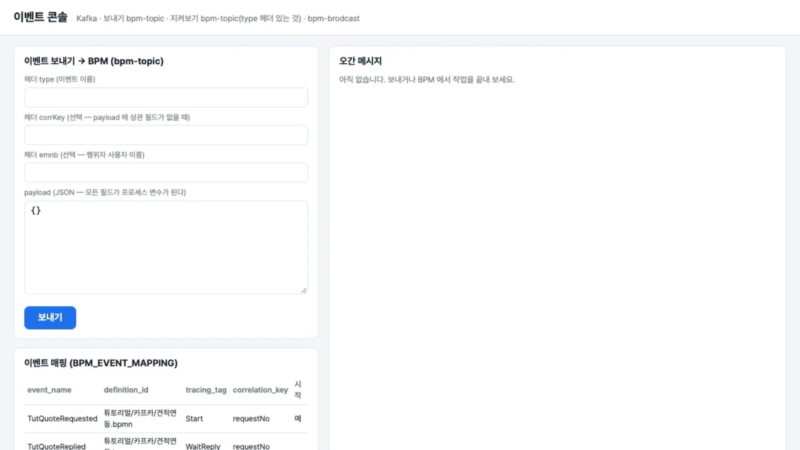
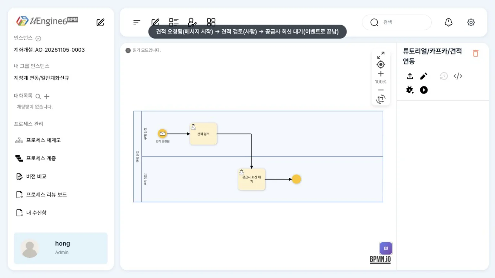
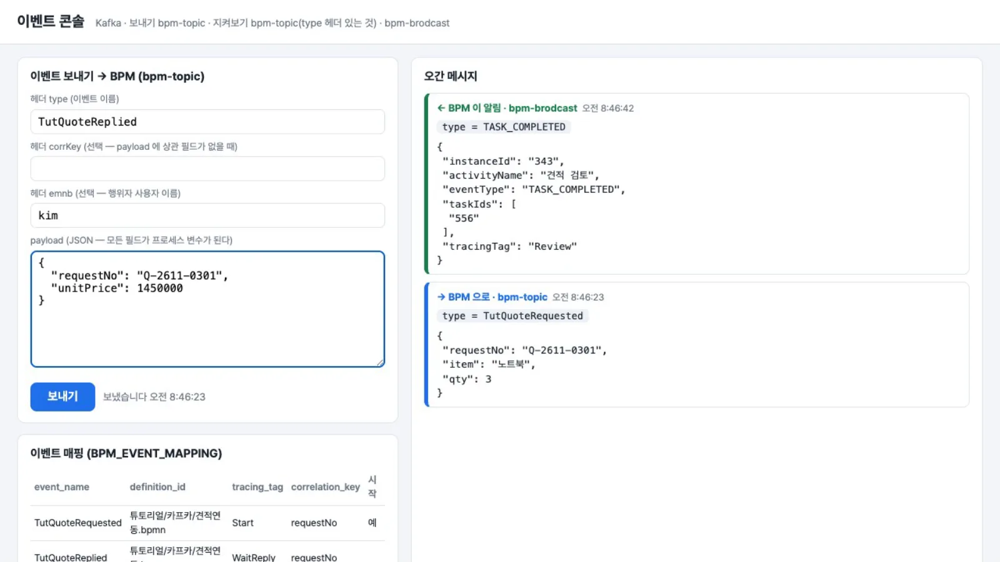
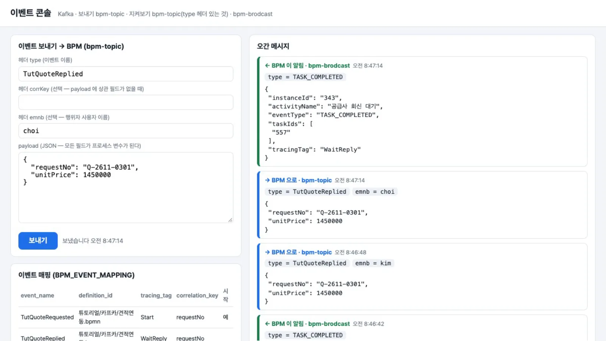
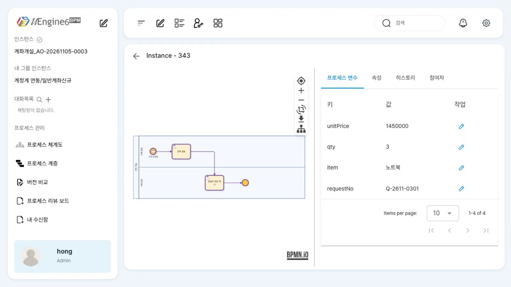

uEngine6 BPM과 다른 시스템을 Kafka 이벤트로 잇는 전체 구조를 설명합니다. 토픽·헤더·payload 계약, 배포 때 등록되는 이벤트 매핑, BPM이 내보내는 진행 알림, 실패와 재시도, 그리고 계정계·ERP·일반 REST 시스템의 세 가지 연동 방식을 비교합니다.
무엇을 · 왜#
업무 시스템(계정계, ERP, 구매 포털)은 거래를 기록하고 규칙을 지키는 기록 시스템입니다. 누가 결재하고 다음 일을 누가 맡으며, 막히면 어디로 되돌릴지는 BPM이 맡습니다. 둘을 REST 호출로 연결하면 서로의 주소·인증·장애에 영향을 받습니다. 이벤트로 이으면 각자 자기 일만 하고, 상대는 정해진 이름의 메시지만 압니다.
Camunda의 기능과 비교하면 다음과 같습니다.
| Camunda | uEngine6 |
|---|---|
| 메시지 상관(Message Correlation) API | Kafka bpm-topic에 헤더 type(메시지 이름)·상관 키를 담아 보냅니다. BPM의 REST를 호출하지 않습니다 |
| 메시지 시작 이벤트 / 받기 작업·메시지 catch | 시작 이벤트 eventKey / 작업의 eventSynchronization / catch의 eventKey(18장, 19장) |
| 외부 작업(External Task) 작업자 | 시스템 작업을 연동 계정 레인에 두고, 작업자가 그 계정의 업무 목록을 읽어 처리한 뒤 결과 이벤트로 끝냅니다(ERP 예제) |
| 실행 리스너·히스토리 이벤트 | bpm-brodcast의 TASK_COMPLETED |
┌──────────── bpm-topic (헤더 type · corrKey · emnb, 본문 JSON) ────────────┐
업무 시스템 ───────┤ ▼
(계정계·ERP·포털) │ process-service(Kafka 모드, 그룹 bpm)
▲ │ │ BPM_EVENT_MAPPING 으로 정의·활동 찾기
│ │ │ → 인스턴스 시작 / 기다리던 작업 완료 / payload → 변수
└──────────┴──── bpm-brodcast (type=TASK_COMPLETED, 본문 instanceId·tracingTag·activityName) ◀┘
process-service의 메시징은 두 방식 가운데 하나입니다(uengine.messaging.mode).
| 방식 | 들어오는 길 | 나가는 길 | 이 튜토리얼 |
|---|---|---|---|
kafka |
Kafka bpm-topic (Spring Cloud Stream 바인딩 bpm-in-0, 그룹 bpm) |
bpm-topic(내부), bpm-brodcast |
이 방식으로 띄웠습니다 |
polling (기본값) |
POST /inbox로 DB 받은함에 쌓고 1초마다 꺼내 처리(최대 3회, 그 뒤 dead-letter) |
SSE /events/stream |
실행해 보지 않았습니다(Kafka 모드에서는 둘 다 404) |
따라 하기#
예제 튜토리얼/카프카/견적연동은 이벤트로 시작해(TutQuoteRequested), 윤팀장이 「견적 검토」를 하고, 공급사의 회신 이벤트(TutQuoteReplied)가 최구매의 「공급사 회신 대기」를 끝내는 프로세스입니다. 이벤트 콘솔(18장) 한 화면에서 주고받는 메시지를 모두 확인합니다.
- 매핑 확인. 정의를 배포하면
BPM_EVENT_MAPPING에 두 줄이 생깁니다. 콘솔을BPM_DB_URL·MAPPING_PREFIX=튜토리얼/카프카/로 띄우면 왼쪽 아래에 보입니다. | event_name | definition_id | tracing_tag | correlation_key | 시작 | |---|---|---|---|---| |TutQuoteRequested|튜토리얼/카프카/견적연동.bpmn|Start|requestNo| 예 | |TutQuoteReplied|튜토리얼/카프카/견적연동.bpmn|WaitReply|requestNo| |
이벤트 콘솔 — 왼쪽 아래가 이벤트 매핑 표 - 정의 보기. 시작 이벤트(메시지) → 「견적 검토」(윤팀장, 사람) → 「공급사 회신 대기」(최구매, 이벤트로 끝남) → 끝.

튜토리얼/카프카/견적연동 - 들어가는 이벤트. 콘솔에서
type = TutQuoteRequested, payload{"requestNo":"Q-2611-0301","item":"노트북","qty":3}를 보냅니다. 인스턴스견적_Q-2611-0301이 시작되고 윤팀장에게 「견적 검토」가 갑니다. - 나오는 알림. 윤팀장이 업무 목록에서 「견적 검토」를 완료하면, 콘솔에
← BPM 이 알림 · bpm-brodcast줄이 생깁니다.{"instanceId": "343", "activityName": "견적 검토", "eventType": "TASK_COMPLETED", "taskIds": ["556"], "tracingTag": "Review"}
들어간 이벤트(파랑)와 BPM 이 보낸 알림(초록) - 행위자가 다르면.
type = TutQuoteReplied, 헤더emnb = kim, payload{"requestNo":"Q-2611-0301","unitPrice":1450000}을 보냅니다. 「공급사 회신 대기」의 담당자는 최구매이므로 엔진이 거절하고, 작업은 그대로 남고 알림도 없습니다. - 행위자가 맞으면. 같은 이벤트를
emnb = choi로 보냅니다. 「공급사 회신 대기」가 끝나고TASK_COMPLETED알림이 나오며, 인스턴스가 완료됩니다. 관리자 화면의 변수에unitPrice 1450000이 들어와 있습니다.
emnb=kim 은 무시되고 emnb=choi 로 「공급사 회신 대기」가 끝났다 
관리자 화면 — 인스턴스 완료, 변수 unitPrice
설정 레퍼런스#
토픽#
| 토픽 | 방향 | 무엇이 오가나 |
|---|---|---|
bpm-topic |
업무 시스템 → BPM | 헤더 type이 있는 외부 이벤트. BPM도 같은 토픽에 내부 메시지(ActivityQueued·ActivityDone, 큐잉을 켠 활동만)를 쓰므로, 업무 시스템이 이 토픽을 구독한다면 type 헤더가 없는 메시지는 건너뜁니다 |
bpm-brodcast |
BPM → 누구나 | 사람 작업이 끝날 때마다 TASK_COMPLETED. 이벤트로 끝난 작업도 같습니다. 토픽 이름의 철자(brodcast)가 이렇습니다 |
process-service 쪽 설정(계정계 예제 config/process-service.kafka.yml과 같습니다):
uengine:
messaging:
mode: kafka
spring:
cloud:
function: { definition: bpm }
stream:
kafka.binder.brokers: ${KAFKA_BROKERS:localhost:9092}
bindings:
bpm-in-0: { group: bpm, destination: bpm-topic, content-type: application/json }
bpm-out: { destination: bpm-topic, content-type: application/json }
bpm-brodcast: { destination: bpm-brodcast, content-type: application/json }
헤더 계약 (들어오는 이벤트)#
| 헤더 | 필수 | 뜻 |
|---|---|---|
type |
예 | 이벤트 이름. BPM_EVENT_MAPPING.event_name으로 찾습니다. 없으면 외부 이벤트로 처리하지 않습니다 |
corrKey |
아니오 | payload에 매핑의 상관 키 필드가 없을 때 쓰는 상관 키 값 |
emnb |
아니오(이 스택) | 그 일을 한 사람의 사용자 이름. 있으면 사람 작업의 현재 담당자와 같아야 끝납니다. 이 브랜치의 원래 엔진은 사람 작업을 끝낼 때 필수입니다(19장) |
payload 계약#
- JSON 객체 하나. 모든 최상위 필드가 같은 이름의 프로세스 변수가 됩니다(시작 이벤트는 시작 변수로, 작업 완료는 인스턴스 변수에 덮어씀).
- 상관 키 필드는 이름으로 찾습니다(순서는 상관없습니다).
- 게이트웨이에서 숫자로 비교할 값은 숫자(정수)로 보냅니다. 엔진은 조건 값의 타입으로 비교합니다.
- 필드 이름을 변수 이름과 같게 지으면 설정이 쉽습니다. 다르면 시작 이벤트·작업의 「데이터 매핑」으로 옮깁니다.
이벤트 매핑(BPM_EVENT_MAPPING)#
배포(POST /definition-changes, 화면 저장도 같음) 때 EventMappingDeployFilter가 등록합니다.
| 무엇이 | 조건 | event_name | is_start_event |
|---|---|---|---|
| 시작 이벤트 | eventKey가 있음 |
eventKey |
프로세스의 시작이면 예 |
| catch 이벤트(메시지·신호) | eventKey가 있음(throw는 제외) |
eventKey |
아니오 |
| 받는 활동(사람 작업·URL 작업·폼 작업 등) | eventSynchronization(s)의 eventType이 있음 |
eventType |
아니오 |
correlation_key는 아규먼트 가운데 「관계 키」(isCorrKey)의 이름입니다. 행은 (이벤트·정의·활동·시작 여부) 단위로 덮어쓰고, 지우지는 않습니다. 이벤트 이름을 바꿨다면 옛 행을 직접 지우세요.
select event_name, definition_id, tracing_tag, correlation_key, is_start_event
from bpm_event_mapping order by definition_id, id;
진행 알림 구독#
bpm-brodcast를 자기 그룹 이름으로 구독합니다. 본문에는 인스턴스 번호만 있고 상관 키는 없으므로, 업무 문서와 짝지으려면 인스턴스 변수를 한 번 읽어 둡니다(GET /instance/{id}/variables).
import { Kafka } from 'kafkajs'
const consumer = new Kafka({ clientId: 'purchase-portal', brokers: ['localhost:9092'] }).consumer({ groupId: 'purchase-portal' })
await consumer.connect()
await consumer.subscribe({ topics: ['bpm-brodcast'] })
await consumer.run({ eachMessage: async ({ message }) => {
if (message.headers.type?.toString() !== 'TASK_COMPLETED') return
const { instanceId, tracingTag, activityName } = JSON.parse(message.value.toString())
console.log(`인스턴스 ${instanceId}: ${activityName}(${tracingTag}) 끝`)
} })
실패와 재시도 (Kafka 모드)#
| 상황 | 엔진 동작 | 할 일 |
|---|---|---|
type 헤더 없음 |
외부 이벤트로 처리하지 않고 경고 로그만 | 보내는 쪽에서 헤더를 넣습니다 |
매핑에 없는 type |
예외 → 같은 메시지를 세 번까지 다시 처리 → 오류 로그 후 다음 메시지로(DLQ 없음) | 정의를 배포했는지, 이름 철자를 확인 |
| 상관 키에 맞는 실행 중 인스턴스 없음 | 아무 일도 하지 않음(오류 아님) | 인스턴스가 이미 끝났거나 상관 키 값이 다릅니다 |
| 기다리는 활동이 아직 없음(이벤트가 먼저 옴) | payload만 변수에 쓰고 끝. 나중에 작업이 생겨도 그 이벤트로 끝나지 않습니다 | 보내는 쪽이 작업이 생긴 뒤 보내게 합니다(ERP 예제는 업무 목록에 작업이 보인 뒤 처리) |
행위자(emnb) 불일치·선점 안 됨 |
거절 → 세 번 재시도 → 오류 로그 | 담당자가 선점한 뒤 다시 보냅니다 |
| 처리 중 예외(정의 오류 등) | 트랜잭션 되돌림 → 세 번 재시도 → 오류 로그 | process-service 로그의 Error wheneverEvent를 확인합니다 |
| process-service가 내려가 있음 | 그룹 bpm의 오프셋이 그대로라, 다시 뜨면 밀린 메시지부터 처리 |
Kafka 보관 기간 안에 띄웁니다 |
같은 이벤트가 두 번 와도 안전한 경우: 시작은 같은 상관 키의 실행 중 인스턴스가 있으면 건너뛰고, 작업 완료는 이미 끝난 작업에는 다시 일어나지 않습니다. 실패한 메시지를 다시 보내는 일(재처리)은 보내는 쪽에서 맡습니다. ERP 예제는 아웃박스 행에 attempts·last_error를 남기고 그 행부터 다시 보냅니다.
세 가지 연동 방식#
| 계정계 예제(32장) | ERP 예제(33장) | 일반 REST 시스템 | |
|---|---|---|---|
| 누가 이벤트를 내나 | 계정계 앱이 업무를 처리할 때마다 직접 bpm-topic으로 |
ERP(앱 서버 없음, DB 함수)가 같은 트랜잭션에서 아웃박스 표에 쓰고, 브리지가 순서대로 Kafka로 | 그 시스템이 할 수 있으면 직접 Kafka로, 못 하면 작은 어댑터가 |
| BPM이 시스템에 일을 시킬 때 | 시키지 않습니다. 사람이 계정계 화면(URL 작업)에서 처리하고 계정계가 이벤트를 보냅니다 | 외부 작업 방식: 시스템 작업을 bpm-bridge 레인에 두고, 브리지가 그 업무 목록을 읽어 ERP 명령(멱등 키)을 실행. ERP의 결과 이벤트가 작업을 끝냅니다 |
서비스 작업으로 REST를 호출합니다(21장). 오래 걸리면 서비스 작업은 요청만 보내고, 결과는 콜백 이벤트로 기다리는 작업을 끝냅니다 |
| 행위자 | 시스템 이벤트라 emnb 없음(이 스택은 require-event-actor: false) |
ERP 사용자 → BPM 사용자 이름으로 바꿔 emnb |
시스템 결과면 연동 계정, 사람이 한 일이면 그 사람 |
| BPM 진행을 아는 법 | bpm-brodcast 구독 → 화면 표시용 상태만 갱신 |
브리지 화면이 연동 메시지를 보여 줌 | 필요하면 bpm-brodcast 구독 |
| 이런 시스템에 | 메시지를 낼 수 있는 앱이 있는 기록 시스템 | 앱 서버가 없거나 DB 트랜잭션과 전송을 묶어야 하는 시스템 | 이벤트를 못 내는 기존 시스템, 짧은 조회·갱신 |
일반 REST 시스템의 콜백 예: 「신용 평가 요청」 서비스 작업이 외부 평가사에 POST /evaluations(본문에 요청번호)를 보내고, 다음 작업 「평가 결과 대기」가 eventSynchronization(TutEvaluationDone, 상관 키 requestNo)으로 기다립니다. 평가사가 끝나면 어댑터가 TutEvaluationDone을 bpm-topic으로 보냅니다.
알려진 제약#
- Kafka 모드에서는 폴링 받은함(
POST /inbox)과 SSE(/events/stream)가 없습니다(404). 화면의 실시간 갱신도 없으므로 업무 목록은 새로 고쳐 봅니다. TASK_COMPLETED외의 알림(작업 배정TASK_ASSIGNED등)은 Kafka로 나가지 않습니다. 외부 작업자는 업무 목록(/worklist/search/findToDo)을 읽어 할 일을 찾습니다.- 큐잉을 켠 활동(
queuingEnabled)은 Kafka 모드에서 멈춥니다(ActivityQueued를type으로 보내고_type으로 읽음). 시스템 작업은 외부 작업 방식으로 만드세요. - 알림 본문에 상관 키가 없습니다. 짝짓기는 인스턴스 변수 조회로 합니다.
require-event-actor스위치는 시연 스택의 엔진 패치입니다. 원래 브랜치에서 사람 작업을 이벤트로 끝내려면emnb와 선점이 필요합니다.- 이벤트로 시작한 인스턴스의 「시작자」는 process-service가 마지막으로 받은 요청의 사용자(정적 필드)에서 옵니다. 다른 클라이언트가 동시에 API를 부르면 엉뚱한 사람이 시작자가 될 수 있으므로, 이벤트로 시작하는 정의의 레인은 그룹·역할이나 사람으로 정해 두세요.
확인 문제#
구매 포털이 `bpm-topic`을 구독해 BPM의 진행을 알려고 합니다. 무엇을 조심해야 하나요?
bpm-topic에는 다른 시스템의 이벤트와 BPM 내부 메시지가 섞여 있습니다. 진행 알림은 bpm-brodcast를 자기 그룹 이름으로 구독하세요. bpm-topic을 꼭 읽어야 한다면 type 헤더로 자기 것만 고릅니다.
`TutQuoteReplied`를 「견적 검토」가 끝나기 전에 보내면 어떻게 되나요?
그때는 「공급사 회신 대기」가 아직 실행 중이 아니므로 아무 작업도 끝나지 않고, payload(unitPrice)만 인스턴스 변수에 쓰입니다. 나중에 「공급사 회신 대기」가 생겨도 그 이벤트로 끝나지 않으므로, 보내는 쪽이 다시 보내야 합니다.
ERP처럼 DB 트랜잭션 안에서 Kafka로 바로 보낼 수 없는 시스템은 왜 아웃박스를 쓰나요?
DB 커밋과 Kafka 전송을 한 번에 묶을 수 없기 때문입니다. 업무 데이터와 보낼 메시지를 같은 트랜잭션으로 아웃박스 표에 쓰면 둘 중 하나만 남는 일이 없고, 릴레이(브리지)가 순서대로 보내다 실패하면 그 행부터 다시 보냅니다.